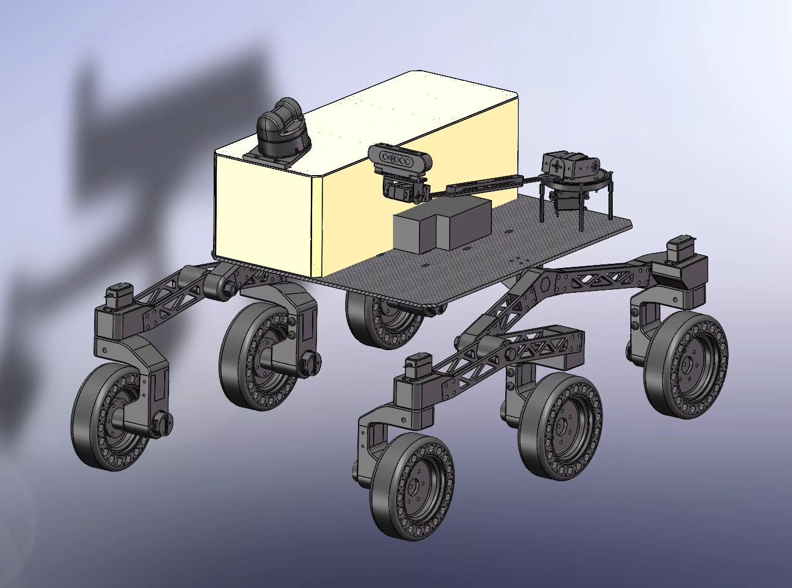
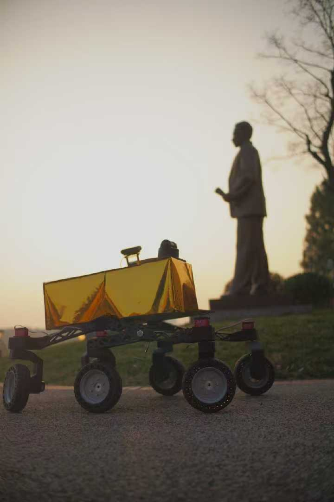
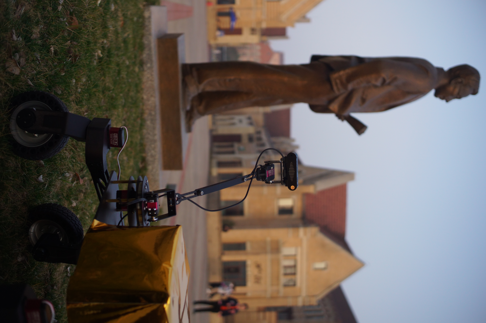
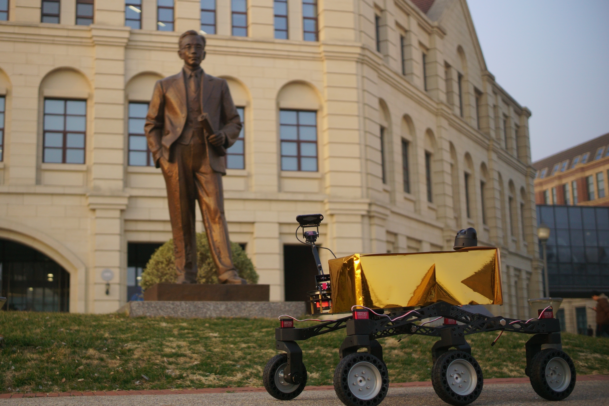

Project overview
The project explores a robotic platform for surveying lunar lava tubes as potential sites for future scientific investigation and infrastructure. Lunar lava tubes are attractive because their subsurface geometry may provide natural shielding from surface radiation, micrometeoroids, dust, and extreme temperature cycling, while their entrances and interiors create difficult mobility, darkness, communication, and deployment challenges.
Our first prototype therefore focused on three linked capabilities: terrain mobility, flexible visual / depth sensing, and continuous 3D reconstruction. The current robot is an Earth-based engineering prototype rather than a space-qualified system.
Research foundation
Streaming 3D reconstruction
The project was initiated around MeMix, a streaming 3D reconstruction method developed by our project leader with research collaborators. Within this project, we explored how that team-owned research capability could be embodied in a mobile robotic platform for lunar-lava-tube mapping; my own work was on the mechanical and system-integration side rather than the reconstruction algorithm.
Lunar lava-tube mission context
Prior lunar-lava-tube studies highlight rugged entrances, rubble, darkness, limited direct communication, and the need for special deployment strategies. Vertical skylight entrances are especially relevant to our mother-child rover and tethered-descent concept.
My contribution
Mechanical architecture
- Contributed throughout team discussions on the overall mechanical configuration for the lunar-use scenario.
- Jointly selected the six-wheel rocker-bogie concept with a teammate; he led the detailed chassis CAD and assembly, while we continued to discuss and support each other across subsystem integration.
- Designed the top-side arrangement of sensing and onboard components and used SolidWorks for the mechanical layout around my assigned subsystems.
Sensor mast & deployment concept
- Designed and assembled the 3-DOF yaw-pitch-pitch camera mechanism.
- Enabled height adjustment and wide viewing coverage for obstacle look-over and side-wall observation during forward motion.
- Proposed a stand-off ropeway-and-tether concept for lowering a sub-rover into steep skylight entrances while keeping the mother rover away from the unstable rim.
First-generation system architecture
Our team selected a six-wheel rocker-bogie layout to improve passive terrain adaptation over uneven surfaces and obstacle-like terrain. I participated in choosing and refining the concept; detailed chassis design and assembly were led by another teammate.
The prototype combines a Livox MID-360 LiDAR with a structured-light camera to support environmental perception and 3D reconstruction experiments in dark or weakly illuminated spaces.
The yaw-pitch-pitch mechanism can raise the camera above nearby obstacles, redirect sensing toward side walls, and adjust viewing direction without reorienting the whole chassis.
Carbon-fiber plate was used to reduce prototype mass, while the electronics bay used a sealed reflective outer layer as a lightweight environmental-protection concept for dust and thermal reflection.
The mechanical design intentionally prioritized low mass under low-gravity operating assumptions. This is a terrestrial proof of concept; a flight design would still require launch-load, thermal-vacuum, radiation, sealing, and lunar-dust qualification.


Prototype assembly & integration
The prototype was assembled and iterated around the physical packaging of the chassis, sensor mast, electronics enclosure, and wiring. These photos show the transition from mechanical assembly to an integrated rover.
3D reconstruction & mobility testing
Early testing focused on two questions: whether the sensing setup could support continuous scene reconstruction, and whether the rocker-bogie chassis could maintain useful mobility over obstacle-like terrain.


.jpg)
Stand-off vertical-skylight deployment concept
Prior studies already propose tethered sub-robots for vertical lava-tube entrances. Building on that general idea, I proposed a more specific stand-off ropeway-and-tether arrangement for the case where the rim is too steep or unstable for the mother rover to approach safely. Directly lowering a sub-rover from farther back would drag the tether across the ground and make the landing attitude difficult to control. My concept separates horizontal positioning from vertical descent: a lightweight ropeway moves the sub-rover to a controlled suspension point, after which a lowering line performs the descent.
This remained a system-level deployment concept rather than a built mechanism. Lunar gravity would reduce line loads and could support lighter tethering hardware, but anchor design, line dynamics, descent control, and fault recovery would still require dedicated engineering validation.
References & research basis
This application-oriented prototype combines research originating within our team with prior lunar-exploration literature. The references below separate the reconstruction work led by our project leader from the external mission studies that informed the lunar-lava-tube scenario.
Streaming 3D-reconstruction research developed by our project leader with collaborators and used as the perception foundation for this application concept.
Background reference for lava-tube environments, vertical / slope entrances, exploration challenges, and main-sub detector concepts.